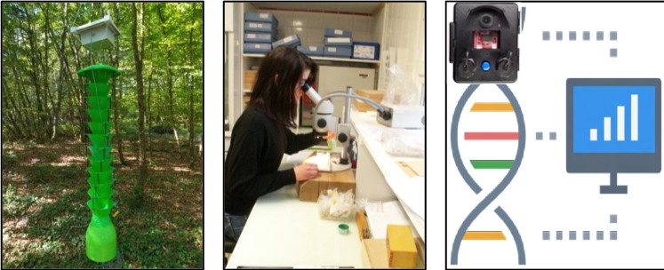

Resources
This page offers documents describing the project, along with the protocols and results produced by the work conducted as part of MASSIF.
[+/-] 🇫🇷 (in French) Lire le résumé du projet MASSIF publié dans la Lettre du DSF
Carole Kerdelhué, INRAE, CBGP, coordinatrice du projet
Le projet MASSIF (Monitoring Automatisé et Systèmes de Surveillance Intelligents de la biodiversité des insectes dans les écosystèmes Forestiers français) a été retenu récemment pour un financement de 4 ans (2025-2029) dans le cadre du PEPR FORESTT, à hauteur de 1,2 millions d’euros.

Regroupant 9 Unités partenaires de l’INRAE, de l’INP-Toulouse, du CNRS, du MNHN, de Sorbonne-Université et de l’ONF, ce projet a pour ambition de lever les verrous du suivi à large échelle des insectes en forêt, en explorant et en calibrant des solutions basées sur les développements technologiques récents des outils d’identification basés sur l’ADN (barcoding et ADN environnemental) et sur l’analyse d’images grâce à l’intelligence artificielle. Le projet cible différents groupes d’insectes incluant des taxons auxiliaires et/ou patrimoniaux, dont la diversité doit être protégée, et des ravageurs, dont l’occurrence et l’abondance doivent être suivies. Les taxa considérés regroupent plusieurs familles d’Hyménoptères, de Diptères et de Lépidoptères nocturnes impliqués dans le service écosystémique de pollinisation; des xylophages et saproxylophages importants pour le service de recyclage de la matière organique; ainsi que des xylophages, cambiophages et des coléoptères à Ambrosia qui sont des ravageurs potentiellement dommageables pour les forêts. Au sein des ravageurs, la détection d’espèces invasives et les fluctuations de taille de population d’espèces indigènes en expansion pourront faire l’objet de signalement. Le projet MASSIF produira des bases de données expertes couvrant l’ensemble de ces groupes taxonomiques, en combinant identification morphologique, séquençage du fragment barcode et de marqueurs ADN complémentaires, et collections de photographies pour l’entrainement des algorithmes d’intelligence artificielle. Ces ressources seront utiles pour le développement des outils de piégeage intelligents prévus dans le projet, mais aussi pour massifier, accélérer et automatiser l’identification de spécimens à tout stade de développement, qui seraient prélevés dans le cadre des missions de nos partenaires non-académiques (DSF, OPIE, associations de préservation de la biodiversité). L’objectif sera de mettre à disposition gratuitement ces ressources de haute qualité, ainsi que des outils accessibles au plus grand nombre. Au-delà des bases de données, et grâce à la collaboration de partenaires ayant des compétences complémentaires (entomologistes, écologues, informaticiens, spécialistes de l’intelligence artificielle, opto-électroniciens, modélisateurs…), le projet vise également à mettre au point des pièges non létaux et connectés, afin de réaliser à terme des suivis continus, à distance et à large échelle. MASSIF permettra le développement de systèmes automatisés de prise d’image et de capture d’ADN environnemental adaptés aux pièges Malaise pour les pollinisateurs et aux pièges Lindgren pour les lignicoles. Au cours du projet, les prototypes seront développés à petite échelle dans les environs des laboratoires et testés à moyenne échelle (sur 10 sites pilotes nationaux). Les performances d’identification et de comptage obtenues à partir de l’ADN et des images seront comparées aux résultats obtenus par les procédures traditionnelles appliquées par les entomologistes experts. Des métriques seront produites à partir des données obtenues, pour suivre l’évolution de la biodiversité mais aussi pour réaliser la surveillance des ravageurs potentiels, natifs et invasifs. Ces données et ces analyses seront couplées à des outils de visualisation et d’alerte, à la fois à destination des scientifiques, des partenaires de terrain, et du grand public.
Dernière mise-à-jour : 12 septembre 2025